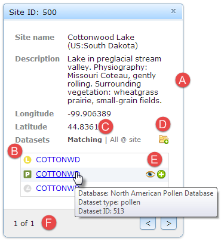

Click on a site marker to display the Site Inspector; with it, you can:
- view site metadata including name, description, and coordinates
- view a list of datasets collected at the site
- each type of dataset is identified by an unique icon; for a complete list, see the icon reference
- alternatively, mouse-over an icon to display its label
- toggle the list of datasets to show:
- Matching: only datasets that meet the original search criteria
- All @ site: all other datasets collected at the site
- add all datasets currently visible in the list to the Dataset Tray
- mouse-over a dataset row to display a summary description and additional tools
- click the button to view dataset detail in the Dataset Inspector
- click the button to add a single dataset to the Dataset Tray
- page through overlapping sites if any (in a layer)
Created with the Personal Edition of HelpNDoc: Free EPub and documentation generator